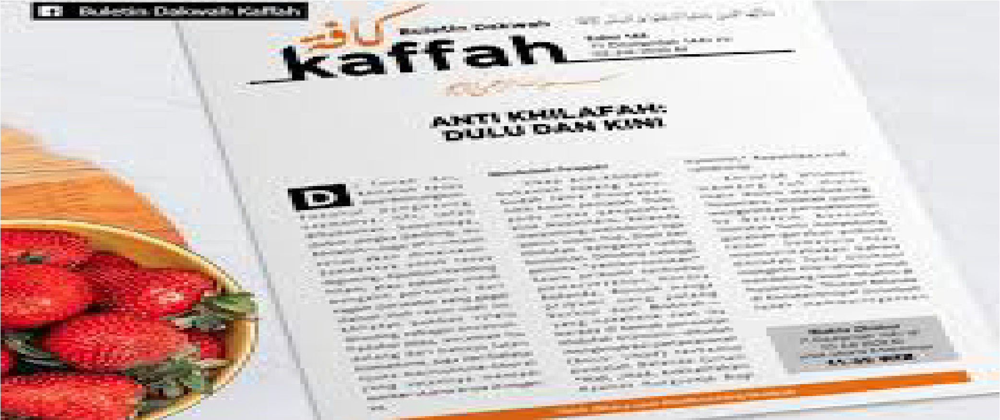
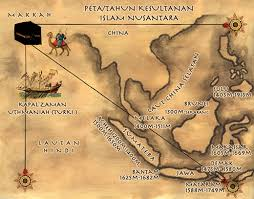

ANTI KHILAFAH: DULU DAN KINI
telegra.ph- 
Buletin Kaffah, No. 148 (14 Dzulqa'dah 1441 H/05 Juli 2020 M)
Di Tanah Air, Khilafah terus diperbincangkan. Padahal pengusung utamanya, HTI, telah dibubarkan. Sepertinya, dalam jangka panjang, isu Khilafah—juga HTI—masih tetap akan dimainkan. Setidaknya untuk terus digoreng, dijadikan kambing hitam, atau sekadar untuk pengalih perhatian dari ragam persoalan yang gagal diatasi oleh rezim saat ini. Khilafah bahkan selalu dituding sebagai ancaman. Padahal jelas, ancaman itu datang dari bahaya laten Komunisme, juga dari bahaya nyata Kapitalisme-liberal yang sejatinya menjadi sumber utama krisis di negeri ini.
Membebek Penjajah?
Sikap anti-Khilafah bukanlah barang baru. Sudah lama disuarakan oleh kaum penjajah. Dulu pada masa penjajahan atas Nusantara, Belanda menentang setidaknya tiga ajaran Islam: haji, jihad dan Khilafah. Ketiganya saling berkaitan. Dituding sebagai pemicu “pemberontakan” kaum pribumi terhadap pemerintahan Hindia Belanda. Banyak warga pribumi yang pulang berhaji dari Makkah—yang notabene saat itu berada di bawah perwalian Khilafah Utsmani—dituduh menginspirasi perlawananan (baca: jihad) terhadap penjajah Belanda (Lihat: “Haji, Jihad, Kekhalifahan: Nasihat Hurgronje Bagi Kolonial,” Republika.co.id, 13/08/2019).
Khilafah Utsmani memang tak main-main dalam mendukung Nusantara. Khilafah pernah mengirimkan perwakilannya ke Batavia. Konsulat Khilafah Turki menyokong gerakan-gerakan pribumi Islam. Sumatera Post memberitahukan bahwa Khilafah Turki Utsmani mengirim misi rahasia untuk mendukung kaum Muslim di Nusantara. "Konsul Belanda di Konstantinopel (Istanbul) telah memperingatkan Pemerintah Belanda bahwa utusan rahasia Muhammedan telah dikirim dari Turki ke Indonesia untuk memotivasi orang-orang Islam agar memberontak kepada penjajah." (Deliar Noer, Bendera Islam, Jakarta, 22 Januari 1925).
Karena itu wajar jika penjajah Belanda sangat anti Khilafah. Sikap anti Khilafah ini sekaligus mewakili ideologi Kapitalisme Barat yang memang anti Islam. Sikap yang sama juga ditunjukkan oleh kalangan yang berhaluan komunis. Komunisme sebetulnya rival utama Kapitalisme. Hanya saja, keduanya sama-sama memusuhi Islam. Karena itu wajar jika kalangan komunis pun bersikap anti Islam dan tentu anti Khilafah. Mereka takut dengan gerakan Khilafah. Itulah yang juga ditunjukkan pada masa lalu oleh Lenin, pemimpin negara komunis, Uni Sovyet, terhadap gerakan Khilafah (F. Zamzami, “Lenin juga Takut Khilafah,” Republika.co.id, 17/08/2019).
Karena itu pula, tidak lama setelah keruntuhan Khilafah, ketika sejumlah tokoh Muslim di Nusantara terlibat dalam upaya-upaya internasional untuk mengembalikan Khilafah, kalangan komunis di Nusantara sangat tidak suka. Mereka lalu membahas soal penghapusan ini dengan nada sinis. Sejarahwan muda Indonesia, Septian AW, mengungkap adanya sebuah artikel di Surat Kabar Medan Moeslimin, yang dikelola Haji Misbach (seorang tokoh berhaluan komunis), pada 15 April 1924. Artikel tersebut antara lain menyatakan, “Adalah ilusi mengharapkan Khalifah membawa persatuan umat Islam, membawa kebahagian dan kebebasan karena hanya komunis yang akan mampu mewujudkannya.” (Medan Moeslimin, 15/04/1924).
Namun demikian, menurut Septian pula, umat Islam di Nusantara tetap menginginkan Khilafah tegak kembali. Mereka lalu mengadakan pertemuan Kongres Al-Islam di Garut pada Mei 1924 atau dua bulan setelah penghapusan Khilafah. Dalam pidato pembukaan kongres yang diadakan oleh Sarekat Islam, Muhammadiyah dan Al-Irsyad ini, KH Agus Salim menempatkan permasalahan ini dalam konteks perjuangan Dunia Islam melawan pemerintah kolonial (Mediaumatnews.com, 7/3/2018).
Dengan demikian sikap anti Khilafah jelas bukan barang baru. Tentu wajar sikap anti Khilafah ini ditunjukkan oleh kalangan yang terpengaruh oleh ideologi Kapitalisme ataupun ideologi Komunisme. Yang tidak wajar adalah jika sikap anti Khilafah ini didemontrasikan—bahkan secara vulgar—oleh sebagian kalangan Islam yang mengklaim anti penjajahan kapitalis dan anti-komunis. Apalagi sikap anti Khilafah ini sejalan dengan sikap para pemimpin Barat imperialis seperti mantan Presiden AS George W Bush Jr., mantan PM Inggris Tony Blair, pemimpin Rusia Putin dan para pemimpin Barat lainnya.
Hubungan Khilafah dan Nusantara

Sebetulnya, jika sedikit saja kita mau jujur pada sejarah, hubungan Khilafah dan Nusantara bukan saja sangat erat. Bahkan Khilafah punya sumbangsih nyata bagi Nusantara.
Kehadiran kaum Muslim dari wilayah Timur Tengah (Khilafah) ke Nusantara pada masa-masa awal disebutkan pertama kali oleh agamawan dan pengembara terkenal Cina, I-Tsing, yang pada 51 H/617 M sampai ke Palembang.
Kerajaan Sriwijaya di Palembang merupakan kerajaan Budha yang tercatat memberikan pengakuan terhadap kebesaran Khalifah. Pengakuan ini dibuktikan dengan adanya dua pucuk surat yang dikirim oleh Raja Sriwijaya kepada Khalifah pada zaman Bani Umayah. Surat pertama dikirim kepada Khalifah Muawiyah dan surat kedua dikirim kepada Khalifah Umar bin Abdul Aziz.
Pada perkembangan selanjutnya, hubungan Khilafah dan Nusantara inilah yang menjadi faktor yang mengkonversi banyak kerajaan Hindu/Budha menjadi kesultanan Islam di Nusantara. Salah satunya Kesultanan Yogyakarta yang merupakan penerus Kesultanan Mataram Islam. Fakta ini diakui secara langsung oleh Sri Sultan Hamengkubuwono X pada Kongres Umat Islam Indonesia (KUII) ke-6 di Yogyakarta. Saat itu ia menjelaskan hubungan yang erat Keraton Yogyakarta dengan Kekhalifahan Utsmani di Turki (Republika.co,id, 12/2/2015).
Berbagai sumber juga telah menyebutkan kegigihan sebagian sultan di Nusantara untuk mendapatkan gelar sultan dari Kekhilafahan Islam di Turki, yang diwakili oleh Syarif Makkah. Hal ini menunjukkan hasrat kuat mereka agar mendapatkan legitimasi dari Khilafah. Fakta ini diakui antara lain oleh sejarahwan Muslim Tiar Anwar Bachtiar (Republika.co.id, 8/5/2015).
Sumbangsih Khilafah
Khilafah Turki Utsmani memiliki posisi sebagai Khadim al-Haramayn (Penjaga Dua Kota Suci, yakni Makkah dan Madinah). Pada posisi ini, Khilafah Utsmani mengambil langkah-langkah khusus untuk menjamin keamanan bagi perjalanan ibadah haji kaum Muslim di seluruh dunia. Khilafah Utsmani, misalnya, mengamankan rute haji dari wilayah sebelah Barat Sumatera dengan menempatkan angkatan lautnya di Samudra Hindia pada tahun 904 H/1498 M.
Fakta lain, menurut Nuruddin ar-Raniri dalam Bustan Al-Salathin, penguasa Aceh Sultan Alauddin Riayat Syah al-Qahhar pernah mengirim utusan ke Istanbul untuk menghadap “Sultan Rum” (Khalifah Turki Utsmani). Utusan ini bernama Huseyn Effendi yang fasih berbahasa Arab. Pada Juni 1562 M, utusan Aceh tersebut tiba di Istanbul untuk meminta bantuan militer Khilafah Utsmani guna menghadapi Portugis. Hubungan Aceh dengan Khilafah Turki Utsmani terus berlanjut. Terutama untuk menjaga keamanan Aceh dari serangan Portugis.
Fakta Sejarah
- 
Dengan demikian eratnya hubungan Khilafah dan Nusantara merupakan fakta sejarah. Wajar jika kalangan Muslim di Nusantara menunjukkan kepedulian luar biasa saat Khilafah Utsmani diruntuhkan tahun 1924. Mereka pun terlibat dalam upaya-upaya internasional untuk mengembalikan Khilafah. Eksistensi sejarah umat Islam Nusantara dalam memperjuangkan Khilafah ini telah diamini oleh para sejarahwan Indonesia maupun Barat. Di antaranya Prof. Deliar Noer, Prof. Aqib Suminto dan Martin van Bruinessen.
Deliar Noer dalam disertasinya, The Modernist Muslim Movement in Indonesia 1900-1942 (Cornell University, 1962), menyatakan bahwa umat Islam di Indonesia tak hanya berminat dalam masalah Khilafah, tetapi juga merasa berkewajiban memperbincangkan dan mencari penyelesaiannya.
Aqib Suminto, juga dalam disertasinya, Politik Islam Hindia Belanda (IAIN Jakarta, 1985), menuturkan tentang pengaruh Pan-Islamisme di Indonesia dalam perjuangan Khilafah saat itu. Dia menyatakan adanya kaitan erat antara paham Pan-Islamisme dan jabatan Khalifah karena Khalifah merupakan simbol persatuan umat Islam di seluruh belahan dunia.
Hal senada diungkapkan oleh seorang orientalis Belanda, Martin van Bruinessen, dalam jurnal ilmiahnya yang berjudul, “Muslim of Dutch East Indies and The Caliphate Question.” (Studia Islamika, 1995).
Keterlibatan kaum Muslim di Nusantara dalam perjuangan mengembalikan Khilafah antara lain diwakili oleh Sarekat Islam, Muhammadiyah dan para kiai dari pesantren. Mereka membentuk ‘Komite Khilafat’ pada 4 Oktober 1924 di Surabaya. Komite Khilafat ini diketuai Wondosoedirdjo (juga dikenal sebagai Wondoamiamiseno) dengan Wakil Ketua K.H.A. Wahab Hasbullah (yang kemudian menjadi salah satu pendiri NU pada 1926). Tujuan pembentukan Komite Khilafah ini adalah untuk ikut menuntut pengembalian Khilafah Utsmaniyah (Azyumardi Azra, “Khilafah,” Republika.co.id. 24/7/2017).
Khatimah
Alhasil, sikap anti-Khilafah jelas bertentangan dengan fakta sejarah (a-historis). Yang lebih naif, sikap anti Khilafah sejatinya sama dengan sikap membebek kepada penjajah yang memang anti Khilafah.
Lebih dari itu, sikap anti Khilafah jelas bertentangan dengan syariah. Pasalnya, Khilafah adalah bagian dari ajaran Islam. Menegakkan Khilafah adalah wajib berdasarkan Ijmak Sahabat maupun ijmak ulama, khususnya ulama Ahlus Sunnah wal Jamaah. Imam an-Nawawi rahimahulLah tegas menyatakan:
وَأَجْمَعُوا عَلَى أَنَّهُ يَجِب عَلَى الْمُسْلِمِينَ نَصْب خَلِيفَة وَوُجُوبه بِالشَّرْعِ لَا بِالْعَقْلِ..
Mereka (para ulama) telah bersepakat bahwa wajib atas kaum Muslim mengangkat seorang khalifah (menegakkan Khilafah, red.). Kewajiban ini berdasarkan syariah, bukan berdasarkan akal (Syarh an-Nawawi ‘ala Shahih Muslim, 12/205).
Hikmah:
Imam Ibnu al-Mubarak rahimahulLah berkata:
لَوْلاَ الْخِلاَفَةُ لَمْ تَأْمَنُ لَنَا سُبُلٌ وَ كَانَ اَضْعَفُنَا نَهْبًا لِاَقْوَانَا
Kalau bukan karena Khilafah, niscaya tak aman jalanan bagi kita, dan orang-orang lemah di antara kita dalam cengkeraman orang-orang kuat. (‘Ashim an-Namri al-Qurthubi, Bahjah al-Majalis, 1/71).